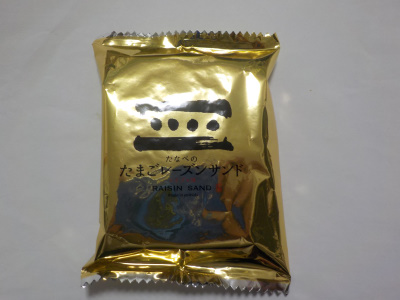
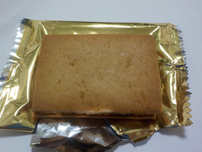
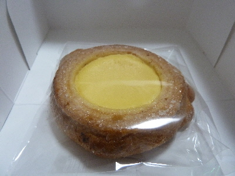

たなべのたまごレーズンサンド
2018/10/22
金のパッケージで派手ですね。

ちょっと高級感のあるお菓子な感じがします。

パッケージの中は地味です。
中のレーズンとクリームよりも、クッキーが主役になってました。
上品な味だなーって思いました。味も高級な感じですね。
島根県出雲市大社町杵築南774-2
閉店しました。店舗名が変わったのかな?
2018/10/22
金のパッケージで派手ですね。

ちょっと高級感のあるお菓子な感じがします。

パッケージの中は地味です。
中のレーズンとクリームよりも、クッキーが主役になってました。
上品な味だなーって思いました。味も高級な感じですね。
2017/03/05
山陰いいものマルシェで販売してました。

チーズクリームたっぷりのバームクーヘンです。
これだけクリームが入っていると、もうケーキ感覚のお菓子ですね。
バームクーヘンはハードタイプで、砂糖が沢山入ってて甘かったです。
クリームより甘いです。
出雲大社にはたまに行くんですが、ここのお店には行ったことがなかったです。今度行く機会があったら行こうと思いました。